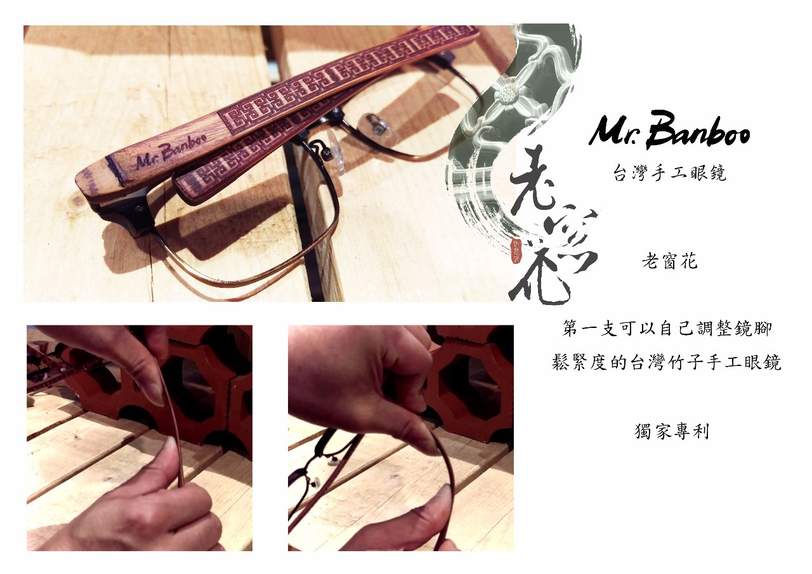

品牌故事
服務項目
聯絡我們
立即訂購
不求機器的速度，只求手感的溫度。
起源
一個鄉野時尚的堅持，徹底展現台灣道地精神， 歷經無數次失敗，秉著堅定永不放棄的態度， 追尋自己的堅持 自己的夢。 巧妙運用桂竹與孟宗竹之特性 [韌性] Mr. Banboo 原竹手作 眼鏡 就此油然而生。
信念
Mr. Banboo & Mr. Bamboo 兩者發音雖然相似對我們來說 意義卻是大大不同
n與m的不同在於 一道成功之門或令人左右不定的分岔路
而我們只要 n 一道成功之門 專注而不分心 。
目標
1: 手工限量 Mr. Banboo正港ㄟ台灣手工眼鏡。
2: 把台灣手工眼鏡推向國際化， 不讓國外手工眼鏡品牌，專美於前。
願景
1.讓愈多人戴上我們共同堅持的故事，激發心中的【三公分的哲學】。 2.能讓更多農友、竹農二度就業，我想這會是我們真心想要做的事。 希望戴我做的眼鏡的人，都能擁有 {三公分的哲學}。 夢想再遠 堅持 就能走到底
Jan
13
Mar 12
Jul 22
Dec 19
Mar 18
Aug 09
Nov 17
Mar 18
Jul 14
Dec 17
Feb 07
May 05
May 16
Prev
Next
Mr.Banboo 第一支Mr.Banboo台灣手工眼鏡
品牌名稱的初衷涵義
